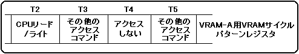
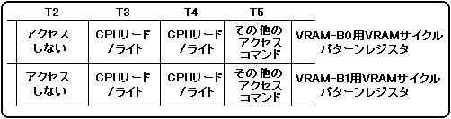

までCPUにウェイトサイクルが挿入されますが、ライトアクセスの場合には、2ワードのライトアクセス2回までであればウェイトサイクルは挿入されません。
CPUによるVRAMアクセスは、VRAM-AへのアクセスまたはVRAM-Bへのアクセスという単位でしか指定できず、バンク単位では指定できません。
2分割しないVRAMに対してCPUによるVRAMアクセスを指定する場合には、アクセスを行うタイミングのVRAMサイクルパターンレジスタに、CPUリード／ライトのアクセスコマンドを指定してください。このときに、CPUリード／ライトのアクセスコマンドのかわりに、アクセスしないというアクセスコマンドを指定しても同じになります。また、画面表示イネーブルレジスタにおいて、表示しないように設定された画面用のアクセスコマンド(パターンネームデータリード、キャラクタパターンデータリードまたはビットマップパターンデータリード)が設定されいる場合も、CPUリード／ライトアクセスになります。画面表示イネーブルレジスタについては、「4.1 画面表示制御」を参照してください。
2分割しないVRAMの全てのアクセスタイミングに、CPUリード／ライトまたはアクセスしないというアクセスコマンドを指定すると、CPUによるアクセスは画面表示期間中いつでも可能になります。これを利用して、一方のVRAMを補助用のワークRAMとして使用することができます。また、絵の表示に使用するVRAMをフレームバッファのように切り替えることで、絵を高速に書き換えながら表示することもできます。
例えば、VRAM-Aを2バンクに分割しない場合に、T2とT4にCPUリード／ライトアクセスを行う場合のVRAMサイクルパターンレジスタの指定は図3.6のようになります。
図3.6 VRAMを2バンクに分割しない場合のCPUリード／ライトアクセス 指定例

2分割するVRAMに対してCPUリード／ライトアクセスを設定する場合には、アクセスを行うタイミングの、バンク0用とバンク1用両方のVRAMサイクルパターンレジスタに、CPUリード／ライトのアクセスコマンドを設定しなければいけません。さらに、CPUリード／ライトのアクセスコマンドを設定するタイミングの1つ前のタイミングのバンク0用とバンク1用両方のレジスタには、アクセスしないというアクセスコマンドを必ず指定しなければいけません。ただし、CPUリード／ライトアクセスを連続したタイミングに指定する場合には、その連続したアクセスの先頭になるタイミングの1つ前のタイミングにのみ指定するだけでかまいません。
例えば、VRAM-Bを2分割する場合に、T4とT5に連続したCPUリード／ライトアクセスを行う場合のVRAMサイクルパターンレジスタの指定は、図3.7のようになります。
図3.7 VRAMを2バンクに分割する場合のCPUリード／ライトアクセス指定例
